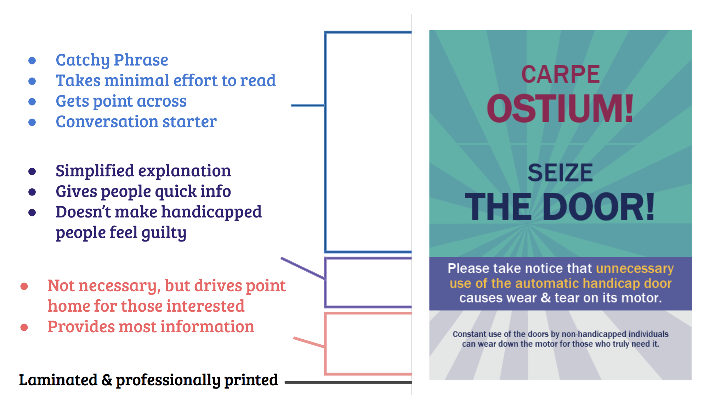

Microsoft Word Manual for BDIC Students (PDF)
This 35-page Microsoft Word Manual was written and professionally printed for students in UMass' Bachelor's Degree with Individual Concentration (BDIC) department. The specific audience for the manual was the BDIC proposal-writing class, and the goal was to teach the students how to use Word to meet the course's formatting and Style Guide requirements.
Feasibility Study for Trap-Neuter-Return Program (PDF)
This Feasibility Study focuses on whether funding a Trap-Neuter-Return (TNR) program in Emporium, Pennsylvania would be possible. The study includes a summary of the issue at hand, a background discussion on the program's benefits, and a description of various potential foundations that are able to fund TNR programs.
Grant Proposal for Trap-Neuter-Return Program (PDF)
The 26-page grant proposal seeks to secure $25,000 in funding on behalf of the Cameron County SPCA in Emporium, PA for a Trap-Neuter-Return program. The program, if graciously funded by PetSmart Charities, would humanely solve the county's problem regarding the growing population of feral cats.
Nokero: Lighting the Way to a Better Future (web)
I wrote this article during my internship at Bulbs.com in the summer of 2016. It was created for the lighting company's quarterly newsletter, which features new advancements in energy technology. My article focuses on the Nokero solar lightbulb and explains its mission.

This poster was created in my Environmental Decision-Making course with Professor Ezra Markowitz.
Problem: The goal of this poster was to reduce unnecessary use of handicapped doors, which causes convective heat and air conditioning loss, ultimately leading to accumulative waste in electricity and economic resources.
Analysis: Observations showed that people used the automatic doors unnecessarily when they were either on the phone or holding the door open for other people (e.g. mindless use).
Solution: The posters were printed, laminated, and hung up in the Maple Dorm in the UMass Commonwealth Honors Living Community in April 2017, where they still reside today. The vibrant colors attracted attention, and the simplistic play on the Latin phrase "Sieze the Day" (altered to "Sieze the Door") was meant to encourage students to manually open the door as opposed to pressing the automatic handicapped button.
Conclusion: The intervention led to awareness and social change, leading to an approximately 67% decrease in unnecessary door use in the first week alone.
